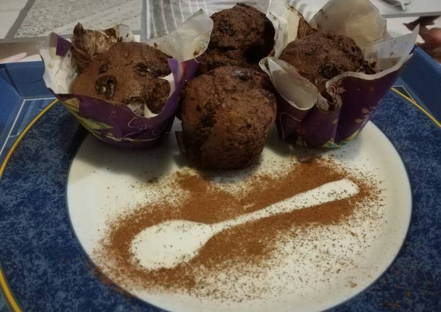

Mi comida favorita
Bryner Sisne
Pastel de Oreo
Ingredientes
150 gr Queso crema
300 gr galletitas de chocolate
300 ml Crema de leche
3 paquetes oreo
600 gr dulce de leche
100 gr manteca
Cacao(esto es por si nos quedamos cortos de base)
Receta
Paso 1:
Triturar las galletitas y mezclar hasta obtener como una masa con la manteca derretida
Paso 2:
Esto es más un tip!!! Por si nos quedamos sin mezcla y no llegamos a llenar el molde!!! No se asusten... con un poco de cacao lo arreglamos
Paso 3:
Una vez hecho eso, por otro lado mezclamos el queso crema, el dulce de leche y la crema de leche!!! Mezclar con batidora hasta que se arme una mezcla homogénea
Paso 4:
Ahora ya estamos listos para preparla!!! Vamos a poner la mitad de la mezcla del paso 3 arriba de la base hecha y decoramos con oreo y dulce de leche
Paso 5:
Terminamos de rellenar y esto necesita unas muchas horas de frezeer!!
Butter Cream
Ingredientes
9 huevos grandes
300 gr azúcar
300 gr harina 0000
C/n esencia de vainilla
C/n Almíbar para humedecer los cortes
Relleno
C/n Dulce de leche repostero y merenguitos para la 1er capa
C/n Nutella y frutillas para la 2da capa
Cobertura
3 potes buttercream sabor frutilla yogurt
Receta
Paso 1:
Se colocan los huevos en el bowls de la batidora y se bate hasta espumar con el azúcar, en dos partes, batir por 15’aprox. debe quedar un punto letra, luego en forma envolvente se agrega la harina tamizada en 3 partes, por último se le agrega la esencia de vainilla y se vuelca la crema homogénea en el molde enmantecado y enharinado y en la base del molde le coloqué papel manteca, yo utilicé como molde una lata de dulce de batata.
Paso 2:
Hice 2 rellenos: El 1*utilicé Dulce de leche Repostero con merenguitos. El 2do utilicé un frasco de Nutella con frutillas picadas y previamente reposadas en azúcar para que se haga un almíbar
Paso 3:
Cobertura:Se hace una 1er capa para sellar y así luego poder realizar las siguientes y no se pegue la miga, en total tiene 3 capaz de butter, por c/u dejé reposar en heladera para que la butter tome consistencia y no se pegue sobre la espátula y así poder darle forma y emparejado de los laterales y la capa superior.
Pastel de carne
Ingredientes
800 Gr Carne Molida de Res
5 a 6 Tiras Tocino corte grueso
1/2 Pimiento Morrón finamente picado
4 Cucharadas Cebolla finamente picada
1/4 Taza Avena
1 Huevo
al gusto Sal
al gusto Pimienta
Receta
Paso 1:
Precalentar horno 375 ºF o 190 ºC. En un bowl mezclar todos los ingredientes del pastel y sazonar al gusto. Para el glaseado: En un sartén agregar el aceite después la cebolla y ajo, dejar dorar un poco y agregar sal, pimienta, Paprika y chipotle. Freír un poco (Es muy importante no dejar que se queme ningún ingrediente) por último agregar catsup y vinagre revolviendo constantemente. Dejar enfriar y apartar para más tarde.
Paso 2:
Formar una cama de tocino sobre un plástico o papel encerado, agregar la carne formando un rollo con ayuda del papel.
Paso 3:
Hornear por 30 minutos y sacar del horno para glasear, volver a hornear por 45 minutos adicionales. Dejar enfriar 5 Minutos antes de servir.
Muffins
Ingredientes
150 g Harina
90 g Azúcar moreno
3 cucharadas Cacao en polvo
95 ml Leche
80 g Mantequilla derretida
Gotas chocolate 75g
Huevos 1 grande
Ralladura de naranja
1/2 cucharadita nuez moscada
1/2 cucharadita Jengibre o clavos de olor
1/2 cucharadita Levadura
1/2 cucharadita Bicarbonato
1/2 cucharadita Canela

Receta
Paso 1:
En un bol mezclamos los ingredientes secos (harina, azúcar, cacao, ralladura, especies, bicarbonato..)
Paso 2:
En otro bol mezclamos la mantequilla derretida con el huevo, gracias a una varilla y vamos añadiendo la ralladura y la leche
Paso 3:
Añado la mezcla seca, si queda grumos da igual, es normal, desaparecerán en el horno.
Paso 4:
Se introduce la mezcla sobre moldes de papel(cápsulas) las hice con papel sulfurizado y papel de regalo, dentro de unos moldes duros, se llena 2/3 del recipiente las cápsulas tienen mucho más altura, por último he añadido las pepitas de chocolate
Paso 5:
Se hornea unos 20' si son grandes o 15' si son del tamaño de las Magdalenas a 190°C